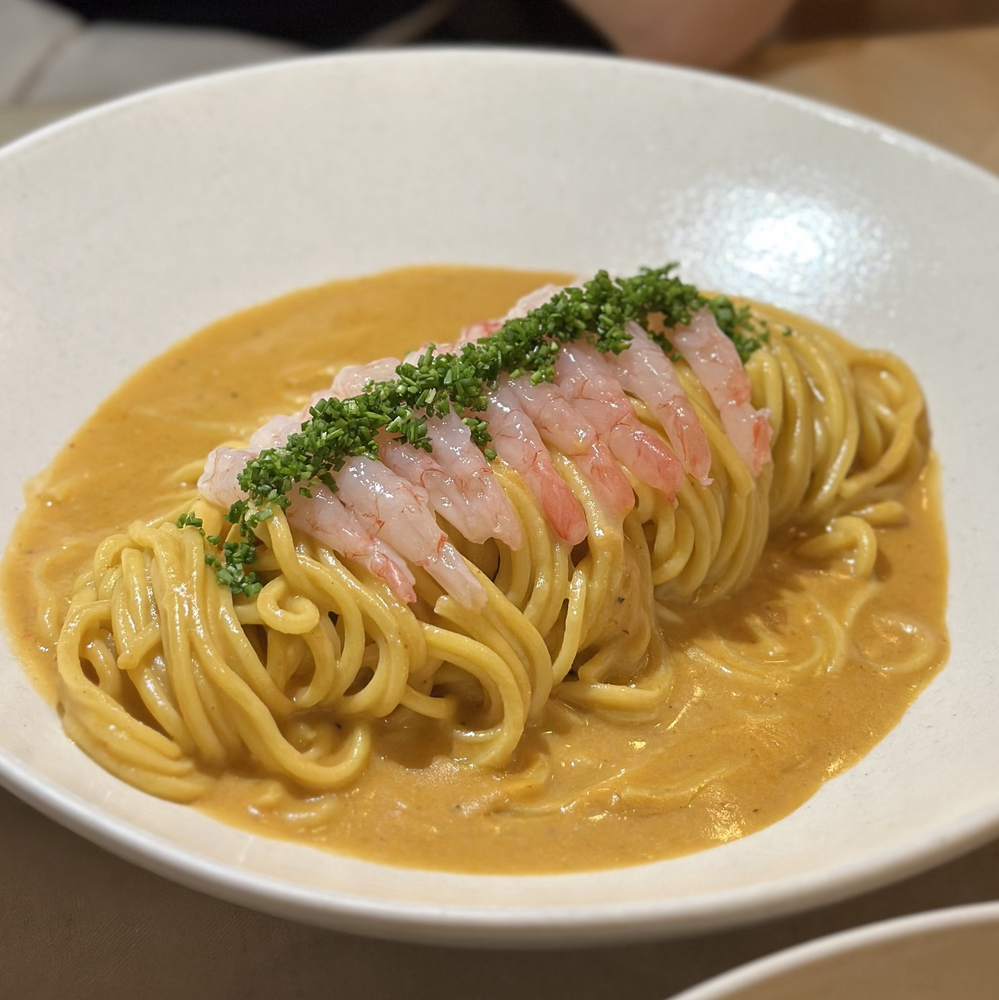
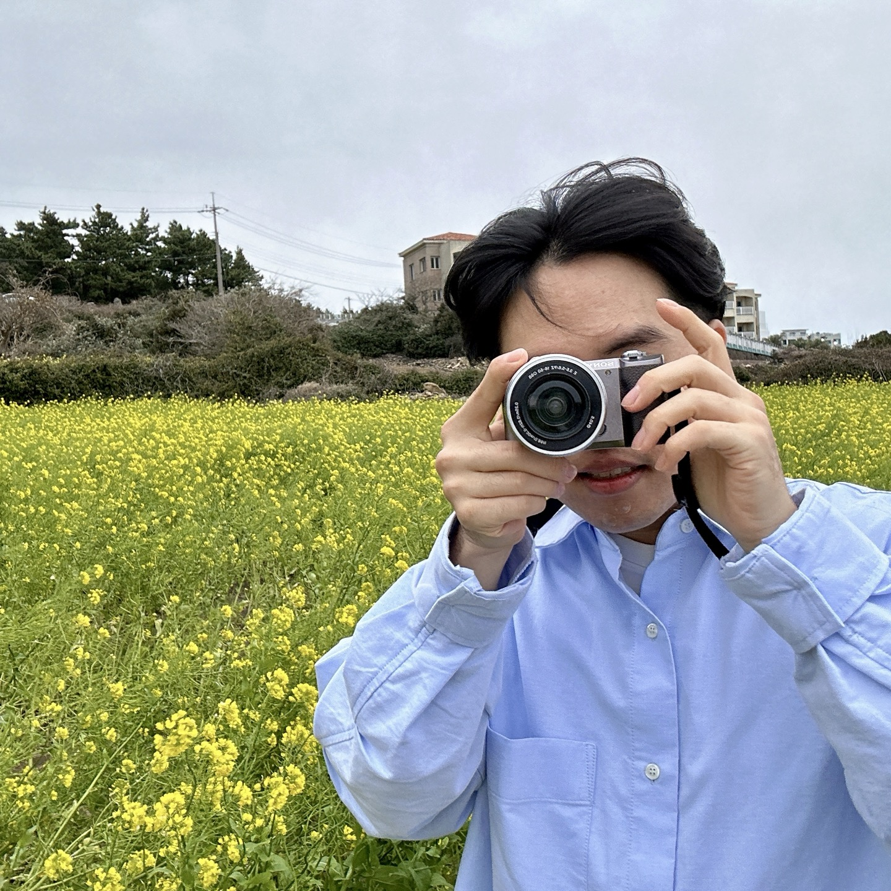
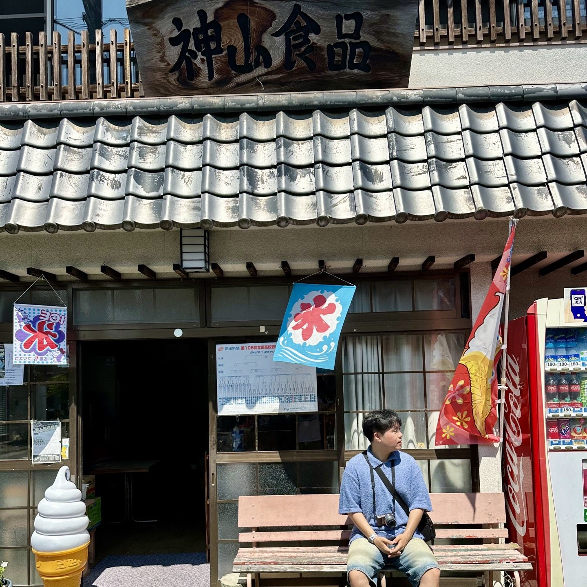

| 맛집 탐방 | 사진 | 여행 |
|---|---|---|
|  |  |  |
| 사실 맛집+사진+여행 이 모든걸 한꺼번에 즐길 수 있어서 시작된 취미에요. |
맛있는 음식을 보면 찍어서 자랑하고 싶은 마음에 이리저리 찍어보다가 최근에
카메라에 관심이 생겼어요. 사진을 누르시면 갤러리로 이동합니다. |
이번년도에 벌써 일본을 두 번 갔다왔어요. 후쿠오카와 마쓰야마를 갔는데 마쓰야마는 항공권이 다른 지역에 비해 저렴해서 매우추천드려요 |